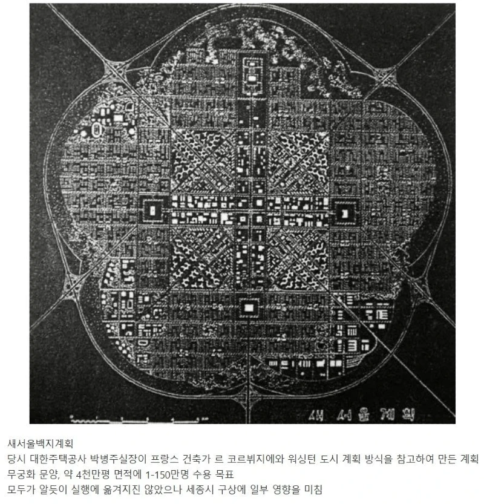
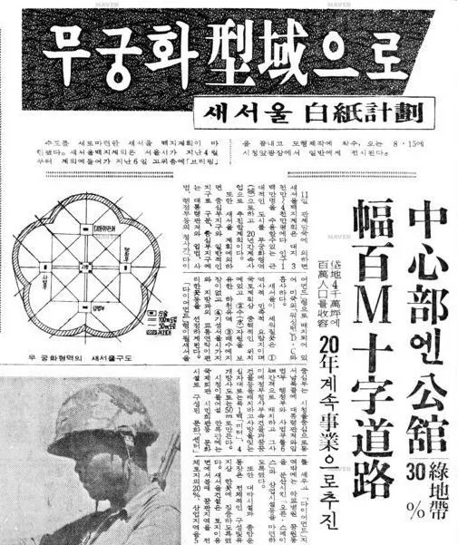
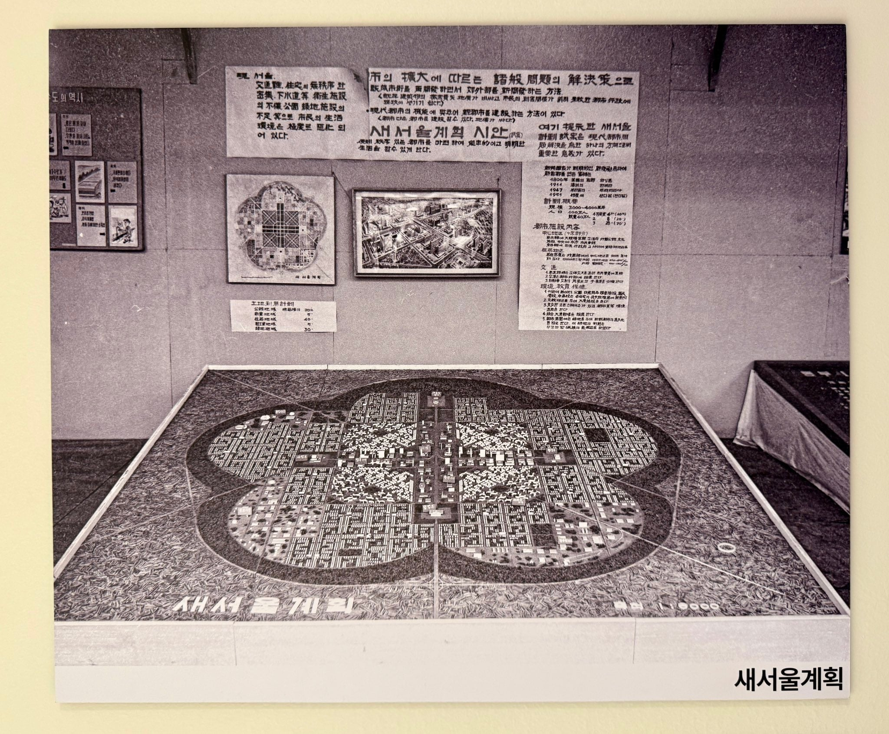
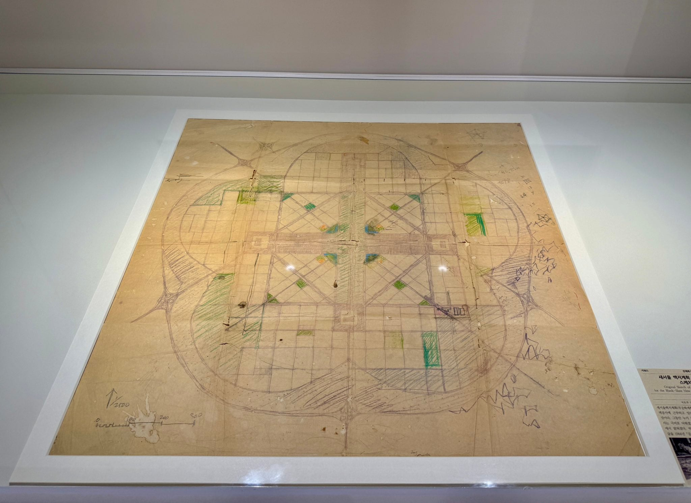

새서울백지계획은 1966년 8월 11일 발표된 3~4천만 평의 토지에 인구 100~150만 명을 수용할 수 있는 새로운 행정수도 건설 계획이다.
도시 건설 후보지를 정하지 않고 도시 지형 등 다른 조건을 고려하지 않은 채 백지 위에 설계한 계획으로 당시 비판적 여론에 밀려 폐기되었다.

서울시는 1966년 6월 하순 대한주택공사 단지연구실장 박병주에게 '새서울백지계획안'을 의뢰하였다.
이때 서울시가 제시한 조건은 4천만 평 정도의 넓이와 상주 인구 100만 내지 150만의 규모, 그리고 도시 외곽을 무궁화형으로 해달라는 것이었다.
박병주는 르 코르뷔지에(Le Corbusier)의 '3백만을 위한 현대도시'와 워싱턴 D.C.의 도시계획 방식을 참고해 계획안을 완성하였다.
중심 지구의 전체 틀은 두 개의 정사각형을 겹쳐 넣어 르 코르뷔지에의 구상을 약간 변형시켰고, 정사각형의 모서리에 북쪽부터 시계 방향으로 대통령 관저주2, 행정부, 입법부, 사법부를 배치해 워싱턴 D.C.의 배치 방식을 따랐다. 도시 중심은 워싱턴 D.C.와 달리 녹지대주3가 아닌 고층건물로 구성하였다.

새서울백지계획은 1966년 5월 당시 서울시장의 즉흥적 발표로 시작되어 구체적 성과 없이 끝나버렸다. 입지나 다른 현실적 여건의 고려 없이 추진된 것이 원인이었다.
그러나 이 계획은 수도분리계획 구상으로서 건축학적으로는 르 코르뷔지에의 ‘3백만을 위한 현대도시’ 구상을 적용했다는 점에서 특징적이고, 1970년대 말 ‘행정수도주4 건설을 위한 백지계획’에 영향을 주었다는 점에서 의미가 있다.
( 글 출처 : 한국민족문화대백과사전
https://encykorea.aks.ac.kr/Article/E0081337 )

위 사진은 현재 서울역사박물관에 전시되어있는 새서울백지계획의 개략적인 도면임. 그 당시 진행되었던 수차례의 끝없는 회의 과정에서 나름 고뇌의 흔적이 느껴지는 듯.
아르헨티나 라플라타 생각나는 구조네